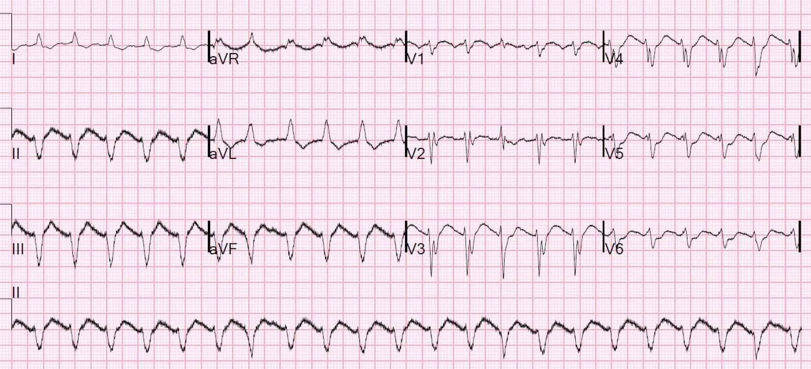
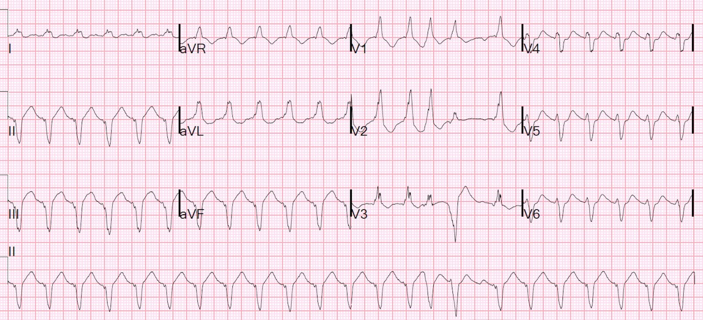
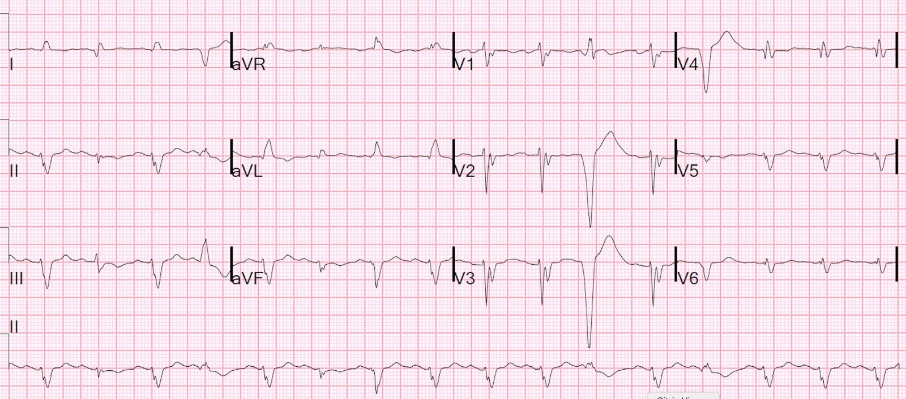

18/06/2019 — Ngừng tim đột ngột: vì sao tim cứ thế ngừng hoạt động?
Bản dịch tiếng Việt của bài "Sudden Cardiac Arrest: why does the Heart Just Die?" – Dr. Smith’s ECG Blog. Giữ nguyên toàn bộ 3 hình ảnh của bản gốc.
Một người đàn ông 60 mấy tuổi đang đi bộ ngoài trời cùng một người bạn thì đột nhiên nói rằng ông “cảm thấy yếu,” không đau ngực, không khó thở (SOB), không đau đầu, rồi gục xuống đất, mất mạch. Người bạn (nữ) đã hồi sinh tim phổi và gọi 911. Khi nhân viên cấp cứu ngoài viện đến, ông vẫn mất mạch và monitor cho thấy một nhịp QRS rộng, chậm, đều, vô mạch.
Sau vài phút hồi sức rất tốt, họ đã đạt được tái lập tuần hoàn tự nhiên (ROSC).
Tại khoa cấp cứu (ED), bệnh nhân được đặt nội khí quản, siêu âm tim qua thành ngực (TTE) cho thấy chức năng tim rất kém, và đầu dò siêu âm tim qua thực quản (TEE) đã được đặt, cùng với đường động mạch và ống thông làm lạnh trung tâm.
Đây là điện tâm đồ đầu tiên tại khoa cấp cứu:


Dưới đây là các nguyên nhân gây ngừng tim đột ngột và mức độ liên quan đến ca này (các chữ H và T):
- Thiếu oxy (Hypoxia) — không phù hợp
- Giảm thể tích tuần hoàn (Hypovolemia) — Nguyên nhân có thể là xuất huyết tiêu hóa, vỡ phình động mạch chủ bụng (AAA), vỡ mạch máu khác như phình động mạch mạc treo. Không nguyên nhân nào trong số này phù hợp với một ca ngừng tim đột ngột như vậy
- Hạ thân nhiệt (Hypothermia) — không phù hợp
- Hạ/tăng kali máu (Hypo/hyperkalemia) — K bình thường
- Ion hydro (Hydrogen ions) — Lactat là 8 dù được đo sau ngừng tim. Dù sao thì nhiễm toan đe dọa tính mạng cũng không xảy ra nhanh như vậy
- Hạ đường huyết (Hypoglycemia) — đây là một lý do gây hôn mê, nhưng không gây ngừng tim đột ngột
- Huyết khối (Thrombosis) – mạch vành hoặc mạch phổi — cả hai đều là thủ phạm có khả năng
- Chèn ép (Tamponade) – tim — đã được loại trừ ngay bằng siêu âm tim
- Độc chất (Toxins) — có độc chất nào gây ngừng tim nhanh như vậy không? Cyanide?
- Tràn khí màng phổi áp lực (Tension pneumothorax) — không phù hợp, và bệnh nhân thông khí tốt, có tiếng thở, và có dấu hiệu trượt màng phổi.
- Chấn thương (Trauma) — Bệnh sử không phù hợp.
Huyết khối mạch vành hoặc mạch phổi
–Thuyên tắc phổi: không phù hợp, vì TEE cho thấy rất nhiều đường B và thất phải (RV) bình thường
–Ông vẫn khỏe mạnh cho đến thời điểm cảm thấy yếu.
Lời giải thích duy nhất trong đầu tôi là một tắc mạch vành diện rộng đột ngột, chẳng hạn tắc thân chung động mạch vành trái. Khi bị tắc, tim có thể chỉ đơn giản là ngừng hoạt động. Tim có thể chỉ ngừng đập, mà không có rối loạn nhịp (không có VT hay VF).
Làm sao tôi biết ông ấy không khởi đầu bằng ngừng tim do VF? Vì nhịp ban đầu của ông là nhịp có tổ chức. VF không tự tổ chức lại, trừ những trường hợp rất hiếm:
Đây là một ca tuyệt vời vì nhiều lý do:
Ventricular Fibrillation During Echocardiogram, Then Spontaneous Conversion Without Defibrillation (Rung thất trong lúc siêu âm tim, sau đó tự chuyển nhịp mà không cần khử rung)
Ca bệnh tiếp diễn
Tôi vừa yêu cầu bác sĩ tim mạch đánh giá để chụp mạch vành cấp cứu dù không có STEMI thì ông lại ngừng tim lần nữa.
Chúng tôi hồi sức lại cho ông, và sau đó ông tụt huyết áp nặng hơn và rung nhĩ với đáp ứng thất nhanh (RVR), vì vậy chúng tôi đã sốc điện chuyển nhịp về một nhịp đều, giúp cải thiện tưới máu.
Đây là điện tâm đồ 12 chuyển đạo sau lần ngừng tim lại:


Thực tế là điện tâm đồ thường không cho thấy bằng chứng của OMI. Trong nghiên cứu lớn gần đây trên các bệnh nhân đau ngực liên tiếp, ST chênh lên chỉ có độ nhạy 21% đối với OMI, và 6% đối với bất kỳ nhồi máu cơ tim cấp nào. Chúng tôi đã nộp một bản thảo cho thấy độ nhạy rất kém của điện tâm đồ đối với OMI ở các bệnh nhân ngừng tim có nhịp sốc được đã được hồi sức.
Có nên đưa tất cả bệnh nhân ngừng tim có nhịp sốc được đi chụp mạch vành bất kể có STEMI hay không?
Từ lâu đã có tranh cãi về việc có nên đưa bệnh nhân có nhịp sốc được mà không có ST chênh lên vào phòng thông tim (cath lab) hay không, và một thử nghiệm ngẫu nhiên gần đây không cho thấy lợi ích: Coronary Angiography after Cardiac Arrestwithout ST-Segment Elevation (COACT) (Chụp mạch vành sau ngừng tim không có ST chênh lên)
Nghiên cứu này có một sai sót chết người: họ không theo dõi tất cả các bệnh nhân không có STEMI KHÔNG được đưa vào nghiên cứu mà thay vào đó được chuyển đi chụp mạch vành ngay. Nghiên cứu được thực hiện ở châu Âu, nơi các hướng dẫn khuyến cáo đưa tất cả các ca ngừng tim có nhịp sốc được vào phòng thông tim cấp cứu. Vì vậy rất có khả năng các bác sĩ đã rất ngần ngại khi đưa bệnh nhân vào nghiên cứu; họ không muốn bệnh nhân bị phân ngẫu nhiên vào nhóm không chụp mạch vành. Nghi ngờ mạnh mẽ này được dữ liệu của họ ủng hộ: chỉ 22 trên 437 (5.0%) bệnh nhân trong nghiên cứu này có OMI.
Bao nhiêu phần trăm ca ngừng tim có nhịp sốc được mà không có STE có OMI?
Sổ bộ lớn này trên tạp chí Circulation 2010 báo cáo rằng ít nhất 1 tổn thương
động mạch vành đáng kể đã được tìm thấy ở 128 (96%) trên 134 bệnh nhân có ST chênh lên trên
điện tâm đồ ghi sau khi tái lập tuần hoàn tự nhiên, và ở 176 (58%) trên 301 bệnh nhân không có ST chênh lên.
5% so với 58%!! Vậy chắc chắn có sai lệch khi tuyển chọn bệnh nhân (enrollment bias).
Căn nguyên gây ngừng tim ở các nhịp không sốc được ít có khả năng là OMI hơn nhiều (tôi không biết con số chính xác ở đây).
Mặc dù phần lớn OMI gây VT/VF, khi thiếu máu cục bộ quá nặng nề, như trong tắc hoặc gần tắc thân chung động mạch vành trái, tim có thể chỉ đơn giản là ngừng đập.
Không thấy căn nguyên nào khác ngoài OMI, và biết rằng cơ hội sống sót duy nhất là tìm và mở thông một động mạch vành, tôi đã kích hoạt phòng thông tim.
Bệnh nhân được đưa đi chụp mạch vành trong tình trạng rất không ổn định, đang truyền epinephrine liên tục. Kết quả chụp mạch vành cho thấy:
Thân chung (LM): 90%
LAD: 100%, có lẽ là mạn tính
RCA: hẹp vừa đến nặng RCA đoạn gần, và tắc 100% cấp tính nhánh rPLA1 đoạn xa (có lẽ cấp tính). Trước khi bị tắc, nhánh này cấp máu cho gần như toàn bộ vùng của thân chung động mạch vành trái qua tuần hoàn bàng hệ.
Thân chung (LM) và rPLA1 đã được đặt stent.
Bệnh nhân đã ổn định.
Sau PCI


Kết cục
Bệnh nhân có diễn biến không ổn định nhưng đã tỉnh lại và ổn định, song bị bệnh cơ tim thiếu máu cục bộ nặng, EF 15%.
Những điểm cần học:
Xác suất tiền nghiệm của OMI trong ngừng tim là rất cao. Ở bệnh nhân đau ngực, chỉ 1-5% có OMI, vì vậy giá trị tiên đoán âm (NPV) của điện tâm đồ khá cao, dù độ nhạy của điện tâm đồ đối với OMI thấp. Trong ngừng tim có nhịp sốc được, và trong ngừng tim có nhịp không sốc được mà không có căn nguyên nào khác, xác suất tiền nghiệm của OMI rất cao, vì vậy NPV của điện tâm đồ rất kém.
Thêm y văn
Trong nghiên cứu năm 1997 trên NEJM này, 48% các ca ngừng tim có nhịp sốc được đạt ROSC là do tắc mạch vành; 1/4 trong số này không có ST chênh lên. Immediate coronary angiography in survivors of out-of-hospital cardiac arrest (Chụp mạch vành ngay ở những người sống sót sau ngừng tim ngoài bệnh viện)
Chúng tôi đã nộp một nghiên cứu về điện tâm đồ trong ngừng tim có nhịp sốc được đã được hồi sức: Độ nhạy và độ đặc hiệu của tôi đối với tắc mạch trên phim chụp mạch vành là 75% và 85%. Bác sĩ tim mạch đọc cùng các điện tâm đồ đó có độ nhạy và độ đặc hiệu là 62% và 77%. Vì vậy ngay cả tôi cũng không thể nhìn thấy 25% số OMI trên các điện tâm đồ này.
Điều thú vị là điện tâm đồ thứ 2, sau khi ổn định, có độ nhạy chung đối với OMI chỉ 26%!!